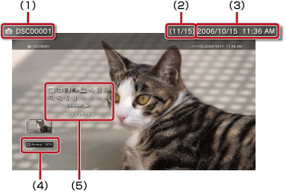

Photo > Utilisation du panneau de configuration
Utilisation du panneau de configuration
Pour effectuer diverses opérations à l'aide du panneau de configuration à l'écran. Le panneau de configuration peut être affiché ou masqué en appuyant sur la touche  .
.
Mode d'affichage

Pour modifier la taille de l'image affichée à l'écran.
| Normal | Pour que l'affichage de l'image corresponde à la taille de l'écran sans en modifier les proportions. |
|---|---|
| Zoom | Pour afficher l'image en plein écran sans en modifier les proportions. Des portions de l'image en haut et en bas ou à gauche et à droite sont coupées. |
Conseil
En fonction du fichier image, il risque de ne pas être possible de modifier le mode d'affichage.
Changer effets
Pour modifier la méthode permettant de basculer entre les photos.
| Normal | Pour remplacer l'image actuellement affichée par l'image suivante. |
|---|---|
| Diapositive | Pour remplacer l'image actuellement affichée par l'image suivante au format diaporama. |
| Fondu | Pour utiliser l'effet de fondu lors du passage à l'image suivante. |
Rognure
Pour supprimer les parties superflues sur les bords inférieur, supérieur, gauche ou droit d'une image. Utilisez les joysticks gauche et droit de la manette sans fil afin de sélectionner la zone à conserver. Utilisez le joystick gauche pour faire défiler dans n'importe quel sens et le joystick droit pour effectuer un zoom avant ou arrière. Les images rognées sont enregistrées sous un autre nom de fichier.
Conseil
Seules les images stockées sur le stockage système du système PS3™ peuvent être rognées.
Ajouter à la liste de lecture
Pour ajouter une image à une liste de lecture.
Conseil
Seules les images sauvegardées dans le stockage système peuvent être ajoutées à une liste de lecture.
Imprimer
Pour imprimer une image à l'aide d'une imprimante.
Conseil
Pour imprimer, vous devez d'abord configurer l'imprimante dans [Sélection imprimante] sous  (Paramètres) >
(Paramètres) >  (Paramètres imprimante).
(Paramètres imprimante).
Définir comme papier peint
Pour définir l'image affichée à l'écran comme papier peint. Cette image s'affiche exactement comme elle apparaît à l'écran, qu'elle soit agrandie, réduite ou ait subi une rotation.
Conseils
- Si aucun papier peint n'est utilisé, modifiez ce paramètre sous (Paramètres) >
 (Paramètres thème) > [Fond d'écran].
(Paramètres thème) > [Fond d'écran]. - Une seule image à la fois peut être définie comme papier peint. Si vous sélectionnez une autre image, l'image actuelle est remplacée.
Supprimer
Pour supprimer des images.
Conseil
Seules les images sauvegardées dans le stockage système peuvent être supprimées.
Affichage
Pour afficher des informations sur une image. A chaque appui de la touche  , le mode d'affichage change comme suit : écran avec informations Exif, écran avec la barre d'informations et écran sans aucune information supplémentaire.
, le mode d'affichage change comme suit : écran avec informations Exif, écran avec la barre d'informations et écran sans aucune information supplémentaire.
Ecran avec barre d'informations

(1) |
Nom d'image |
|---|---|
(2) |
Numéro d'image / nombre total d'images |
(3) |
Date et heure enregistrées |
(4) |
Icône d'état |
(5) |
Panneau de configuration |
Zoom avant / Zoom arrière

Pour effectuer un zoom avant ou arrière afin d'agrandir ou de réduire l'image. Vous pouvez utiliser le joystick gauche de la manette sans fil pour faire défiler dans n'importe quel sens et le joystick droit pour effectuer un zoom avant ou arrière.
Pivoter à gauche / Pivoter à droite
Pour faire pivoter l'image de 90 degrés vers la gauche ou vers la droite.
Haut / Bas / Gauche / Droit
Pour déplacer l'image afin d'afficher toute portion masquée, par exemple lorsque (Mode d'affichage) est défini sur [Zoom].
Précédent / Suivant
Pour afficher l'image précédente ou suivante.
Diaporama
Pour afficher automatiquement chaque image dans l'ordre.